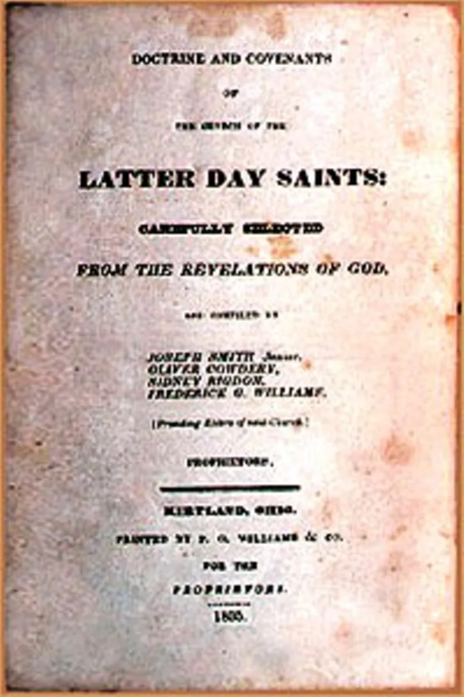
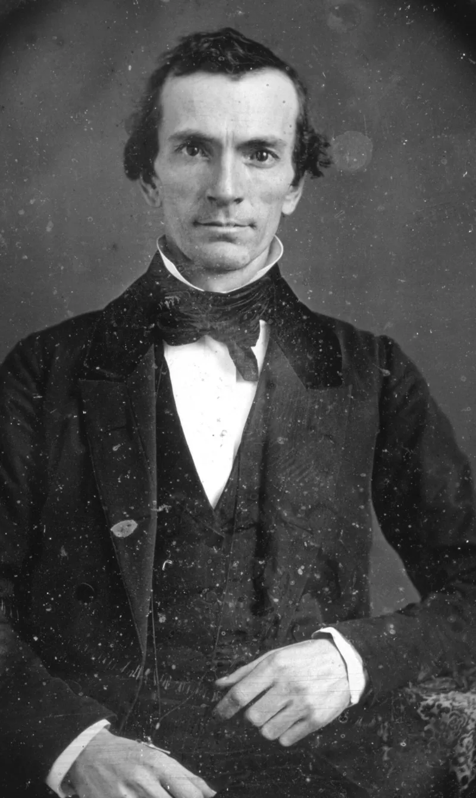

Revelations rewritten: a divining rod becomes Aaron's gift
AdmittedTheir own church publications admit these facts. You can make this point from LDS sources alone.
What happened
Revelations printed in 1833 as the word of God were rewritten for the 1835 Doctrine and Covenants. Hundreds of changes, some of them substantive.
You can check every one in the church's own Joseph Smith Papers scans.
Three examples
Book of Commandments 4:2 says God "will grant him no other gift." D&C 5:4 makes it "no other gift until it is finished." Book of Commandments 7 says Oliver Cowdery's gift is working with the rod, the rod of nature. D&C 8 renames the divining rod "the gift of Aaron." And Book of Commandments 28 grew into eighteen verses, now D&C 27.
Those verses name the angels who restored the priesthood.
Why it matters
Deuteronomy 4:2 and Proverbs 30:5-6 forbid adding to God's words. Look at what these edits imply.
A text says thus saith the Lord. Then it has to be re-engineered years later, to fit how the movement grew.
That looks like a human draft.
Their answer, at full strength
FAIR says Joseph never claimed word-for-word dictation. Revelations came as impressions, put into his own imperfect language.
So the prophet who received them could revise and expand them as the church grew and his understanding grew. The additions to section 20 simply took in offices revealed after 1830.
The church publishes every version openly, which is the opposite of concealment. And the revised texts were accepted by common consent at the 1835 conference.
How strong is this argument?
They admit this themselves, and publish both editions side by side. The defence justifies the edits; it does not deny them.
Notice the price. If revelations are fallible paraphrases that can be re-engineered later, then every thus saith the Lord weighs less — including D&C 132.
What to say
"Have you compared the 1833 and 1835 versions? They're both on the church's own site."



How they answer this — at its strongest
He never claimed the words were dictated, so he could reword them later.
FAIR argues that Joseph Smith never claimed the words were dictated by God. Revelations came as impressions, put into his own imperfect language.
So the man who received them could revise them, expand them, and update them as the church grew. The additions to section 20 simply took in offices revealed after 1830.
The church prints every version openly in the Joseph Smith Papers. FAIR calls that the opposite of a cover-up.
And the revised texts were accepted by common consent at the 1835 conference.
The verdict
They admit this, but a text that can be re-engineered later carries less weight.
The changes are conceded and published by the church itself. The Joseph Smith Papers put both editions side by side, and FAIR's defence justifies the edits rather than denying them.
The remaining dispute is what to make of it. May a prophet revise God's words? And there their answer creates its own problem.
If revelations are Joseph's fallible paraphrases, open to later re-engineering, then the weight of any given 'thus saith the Lord' drops. That includes D&C 132.
Severity is medium because the fact bites chiefly alongside the priesthood-restoration backdating.
Sources
- Joseph Smith Papers: Book of Commandments, 1833 (full scans)
- IRR: Scanned images of the 1833 Book of Commandments and 1835 D&C
- Tanner (UTLM): Changing the Revelations
- LDS Discussions: Overview of Changes to the Revelations
- FAIR: Doctrine and Covenants — Textual changes